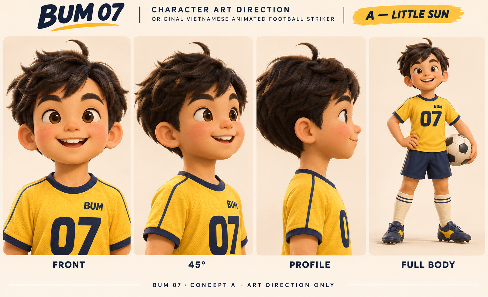
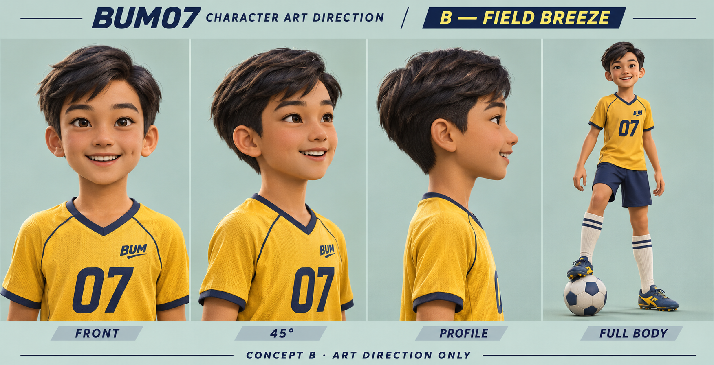
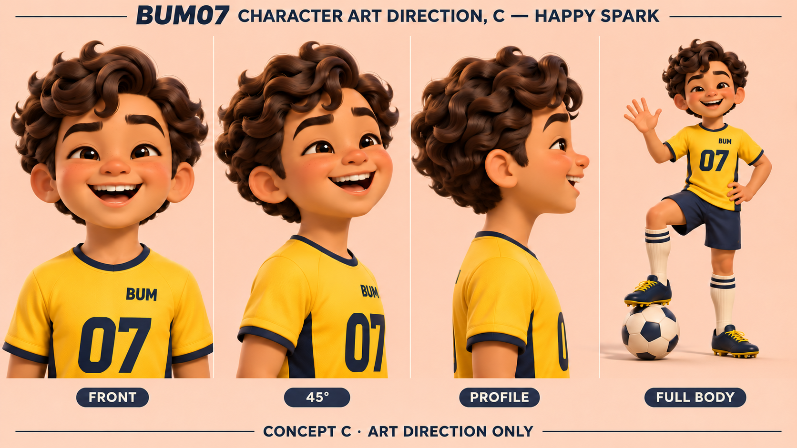

BUM07 P5.1 — Character Art Direction
BUM 07 · P5.1
Ba hướng thiết kế để lựa chọn
CONCEPT ONLY · CHƯA NGHIỆM THU MỸ THUẬT · KHÔNG TỰ CHẤM 9/10
Ảnh concept tạo bằng AI theo phong cách diễn họa hoạt hình3D; không phải render từ model đã dựng. Mỗi hướng có chính diện, góc định hướng45°, nghiêng và toàn thân, biểu cảm vui vẻ.
| A — Mầm Nắng | B — Gió Sân Cỏ | C — Tia Vui |
|---|
| Mặt / mắt | Tròn, má đầy, mũi nhỏ; mắt tròn mở lớn. | Oval, thanh hơn; mắt hạnh nhân, má lúm. | Trái tim bo tròn, má rộng; mắt oval cười, răng cửa có khe nhỏ. |
|---|
| Tóc / tỷ lệ ý đồ | Mái quét, một chỏm cong; khoảng4,2 đầu. | Rẽ lệch thấp, hai bên gọn; khoảng5 đầu. | Cụm xoăn lớn; khoảng4,5 đầu. |
|---|
| Ưu điểm | Gần gũi, dễ thương, dễ đọc trên màn nhỏ. | Dáng cầu thủ nhí nhanh nhẹn, chuyển động dễ đọc. | Cá tính mạnh, silhouette và nụ cười dễ nhớ. |
|---|
| Hạn chế | Dễ thành baby/búp bê nếu phóng đầu, mắt thêm. | Dễ quá lớn tuổi hoặc quá bán hiện thực. | Tóc dễ nặng/che trán; mắt cười cần thêm bản neutral. |
|---|
| Khó khi làm3D | Trung bình–cao: socket/mí lớn, má và đầu–cổ. | Trung bình–cao: skin, môi, ánh mắt tự nhiên. | Cao: sculpt/retopo tóc, phối hợp má–mí–miệng. |
|---|
Tỷ lệ là mục tiêu thiết kế, chưa đo từ mesh. Độ khó là đánh giá định tính, không phải thời gian/FPS/polycount đã kiểm chứng. Xem ART-DIRECTION.md để đọc báo cáo đầy đủ.
A — Mầm Nắng / Little Sun
Hồn nhiên, gần gũi · mặt tròn, mắt mở lớn · mái quét với một chỏm cong.

Ảnh conceptAI, không phải model/renderBlender. Áo vàng07, quần navy, tất và giày bóng đá được giữ.
B — Gió Sân Cỏ / Field Breeze
Nhanh nhẹn, tự tin · mặt oval, mắt hạnh nhân · tóc rẽ lệch thấp, tay/chân thanh hơn.

Ảnh conceptAI, không phải model/renderBlender. Giữ nét trẻ em khi chuyển sang3D, tránh kéo dài hàm/cổ/vai.
C — Tia Vui / Happy Spark
Tinh nghịch, giàu năng lượng · má rộng, mắt oval cười · cụm tóc xoăn có silhouette riêng.

Ảnh conceptAI, không phải model/renderBlender. Tóc là cụm lớn có rãnh và khoảng ngắt, không phải nhiều ống xoắn rời.
Ghi nhận lựa chọn — chưa dựng model
Nếu ưu tiên…
- A: nét dễ thương, gần gũi cho món quà gia đình.
- B: dáng cầu thủ nhí nhanh nhẹn, thiên thể thao.
- C: cá tính tinh nghịch và nhận diện nổi bật.
Cần thống nhất sau khi được chọn
Turnaround neutral cùng tỷ lệ; mắt mở bình thường và bảng biểu cảm; vị trí tai, hairline, nếp áo và số răng. Sheet hiện tại có thể còn sai khác chi tiết giữa các góc, không phải bản vẽ orthographic hoặc góc camera đo từ model thật.
Nếu được cho phép sản xuất ở bước sau, thiết kế đã duyệt sẽ quyết định mesh. Scott chỉ có thể được nghiên cứu như nền tảng kỹ thuật, không ép trở lại khuôn mặt Scott và không chỉ đổi màu/thu nhỏ donor.
DỪNG TẠI P5.1 ĐỂ CHỦ DỰ ÁN CHỌN A/B/C.
Chưa tạo model hoàn chỉnh, rig hay GLB sản xuất. Chưa tiếp tục sửa DQS/tối ưu GLB.
Không sửa main, GitHub Pages, Supabase, PR#2 hay ba nhân vật còn lại. P4/P4.1/P4.1R được giữ nguyên. Không tự chốt phương án hoặc tuyên bố đạt9/10.
Bản đầy đủ: ART-DIRECTION.md · Tệp ảnh gốc: concepts/*.png · BÉ BUM PENALTY3D — BUM tiền đạo07.